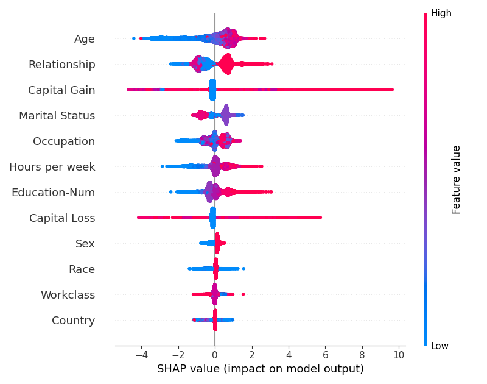

Note
Click here to download the full example code
07. Basic example
Out:
13%|=== | 4304/32561 [00:11<01:12]
15%|=== | 4778/32561 [00:12<01:09]
16%|=== | 5302/32561 [00:13<01:06]
18%|==== | 5810/32561 [00:14<01:04]
19%|==== | 6309/32561 [00:15<01:02]
21%|==== | 6838/32561 [00:16<01:00]
23%|===== | 7331/32561 [00:17<00:58]
24%|===== | 7843/32561 [00:18<00:56]
26%|===== | 8367/32561 [00:19<00:54]
27%|===== | 8860/32561 [00:20<00:53]
29%|====== | 9382/32561 [00:21<00:51]
30%|====== | 9892/32561 [00:22<00:50]
32%|====== | 10383/32561 [00:23<00:49]
34%|======= | 10914/32561 [00:24<00:47]
35%|======= | 11359/32561 [00:25<00:46]
36%|======= | 11802/32561 [00:26<00:45]
38%|======== | 12329/32561 [00:27<00:44]
39%|======== | 12842/32561 [00:28<00:42]
41%|======== | 13367/32561 [00:29<00:41]
42%|======== | 13802/32561 [00:30<00:40]
44%|========= | 14319/32561 [00:31<00:39]
45%|========= | 14815/32561 [00:32<00:38]
47%|========= | 15284/32561 [00:33<00:37]
48%|========== | 15761/32561 [00:34<00:36]
50%|========== | 16203/32561 [00:35<00:35]
51%|========== | 16729/32561 [00:36<00:34]
53%|=========== | 17178/32561 [00:37<00:33]
54%|=========== | 17683/32561 [00:38<00:31]
56%|=========== | 18195/32561 [00:39<00:30]
57%|=========== | 18639/32561 [00:40<00:29]
59%|============ | 19148/32561 [00:41<00:28]
60%|============ | 19616/32561 [00:42<00:27]
62%|============ | 20102/32561 [00:43<00:26]
63%|============= | 20611/32561 [00:44<00:25]
65%|============= | 21129/32561 [00:45<00:24]
67%|============= | 21656/32561 [00:46<00:23]
68%|============== | 22190/32561 [00:47<00:21]
70%|============== | 22720/32561 [00:48<00:20]
71%|============== | 23195/32561 [00:49<00:19]
73%|=============== | 23716/32561 [00:50<00:18]
74%|=============== | 24241/32561 [00:51<00:17]
76%|=============== | 24769/32561 [00:52<00:16]
78%|================ | 25298/32561 [00:53<00:15]
79%|================ | 25818/32561 [00:54<00:14]
81%|================ | 26344/32561 [00:55<00:12]
83%|================= | 26868/32561 [00:56<00:11]
84%|================= | 27367/32561 [00:57<00:10]
85%|================= | 27805/32561 [00:58<00:09]
87%|================= | 28300/32561 [00:59<00:08]
88%|================== | 28810/32561 [01:00<00:07]
90%|================== | 29300/32561 [01:01<00:06]
92%|================== | 29817/32561 [01:02<00:05]
93%|=================== | 30326/32561 [01:03<00:04]
95%|=================== | 30830/32561 [01:04<00:03]
96%|=================== | 31358/32561 [01:05<00:02]
98%|===================| 31867/32561 [01:06<00:01]
99%|===================| 32366/32561 [01:07<00:00]
6 # Libraries
7 import xgboost
8 import shap
9 import matplotlib.pyplot as plt
10
11 # Load shap dataset
12 X, y = shap.datasets.adult()
13
14 # Train model
15 model = xgboost.XGBClassifier().fit(X, y)
16
17 # Create shap explainer
18 explainer = shap.Explainer(model, X)
19 shap_values = explainer(X)
20
21
22 # Create beeswarm plot using explainer
23 shap.plots.beeswarm(shap_values,
24 max_display=12,
25 order=shap.Explanation.abs.mean(0))
26
27 # Adjust
28 plt.tight_layout()
Total running time of the script: ( 1 minutes 9.463 seconds)